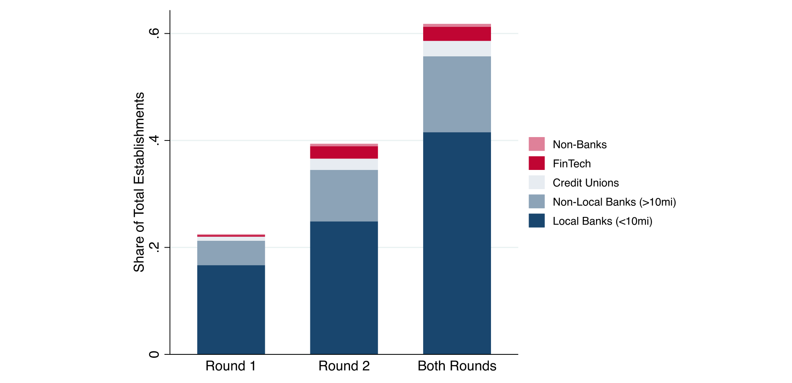
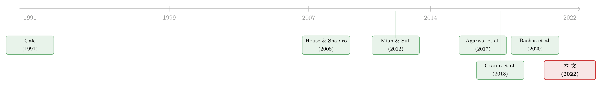

半万亿美元，砸出了多少个工作？——当救命钱的去向，由你的开户行决定
本文读的是 Granja, Makridis, Yannelis & Zwick (2022, Journal of Financial Economics)：美国疫情期间的薪资保护计划 (Paycheck Protection Program, PPP) 四个月内放出 $525 billion，却几乎没有撑住就业——前五个月的总就业效应仅相当于合格就业的 4%，折算下来「每保住一个工作-年」要花掉至少 $175,000。更耐人寻味的是：钱流向哪里，并不取决于哪里受灾最重，而取决于企业碰巧把账开在了哪家银行。
1 引言：一笔花得飞快、却好像「打了水漂」的钱
2020 年春天，美国经济被按下了暂停键。成百上千万没有公开融资渠道的小企业，眼看着现金流断裂、却找不到一根救命稻草。于是国会出手了——作为《CARES 法案》的一部分，薪资保护计划 (Paycheck Protection Program, PPP) 横空出世：政府担保、可以被「豁免」的贷款，专门发给雇员不超过 500 人的小企业，用来发工资、付房租、续命。
它有多大？仅仅四个月，PPP 就放出了超过 $500 billion，是美国历史上规模最大的以企业为对象的财政计划之一。第一轮 $349 billion 在 4 月 3 日到 16 日之间被一抢而空，国会随即追加 $320 billion，到 8 月 8 日停止收件时，累计放款 $525 billion。
钱花得这么痛快，那效果呢？
这正是本文抛出的第一个悬念。作者用覆盖全部 PPP 贷款的微观数据，配上 Homebase 提供的高频就业数据，得到一个让人有些不安的结论：这笔半万亿美元的巨款，对就业的拉动小得可怜。前五个月的总就业效应只相当于合格就业的 4%，换算成「成本」，每保住一个工作-年至少要烧掉 $175,000——而当年小企业雇员的平均年薪远不及此。作者更进一步估计，PPP 所「支撑」的工作里，超过 90% 是边际内 (inframarginal) 的：就算没有这笔钱，这些岗位本来也保得住。
「每个工作 17.5 万美元」并不是说政府在挥霍。它真正的含义是：绝大部分钱没有用在「改变就业的边际决策」上，而是流向了本就不会裁员的企业，最终落进了业主、房东、债权人的口袋。这恰恰是本文要追问的第二个问题——钱去哪了？
但在回答「钱去哪了」之前，得先回答一个更前置、也更关键的问题：钱为什么去了那里？
2 真正关键的一步：把「银行」当成政策的管道
设想 PPP 的设计初衷——它最该惠及的，应该是疫情冲击最猛烈的地方：停工最多、工时下滑最厉害、感染和死亡最严重的区域。这是任何一个有「靶向」意识的政策都会期待的。
可作者发现，事实恰恰相反。他们用工时下降、雇员减少、企业停业、以及新冠感染与死亡来度量「政策前的经济冲击」，结果是——资金并没有更多地流向受灾更重的地区；如果说有什么倾向，反而是流向了受灾较轻的地方。把两轮放款合在一起看，政策前的经济萧条程度与 PPP 参与度之间的相关性约等于零。
为什么会这样？答案藏在一个被很多人忽略的细节里：PPP 的钱不是政府直接发的，而是借道商业银行发的。企业要向银行申请，银行收集材料、填进 SBA 的定制系统、再提交审核。于是「银行」这个中介，就成了决定钱流向哪里的真正闸门。
接着，一个自然的问题是：哪些银行放得快、放得多？作者发现，银行在 PPP 初期的表现，可以被几个事前 (ex ante) 特征干净利落地预测出来：
- 与 SBA 的既有关系——熟门熟路的银行，上手就快；
- 更依赖人力而非自动化——PPP 要求人工把信息录进定制申请，劳动力多的银行反而吃香；
- 是否正被监管执法——受到正式执法行动 (enforcement actions) 约束的银行，不能自动获批放 PPP 贷款，于是初期放款明显落后。
注意这里的反直觉之处：在一个「先到先得」的危机里，决定一家小餐馆能不能尽早拿到救命钱的，不是它受灾多重，而是它的开户行恰好有没有富余的人手、跟 SBA 熟不熟、有没有官司缠身。银行的异质性，活生生地把「需求」和「拨款」之间的链条给拧断了。
（关于银行这条「管道」如何系统性地把某些借款人挡在门外，可参见《银行不肯放的款，黑人餐馆只能去金融科技公司「绕路」》；而担保贷款本身如何让银行把风险「换」给政府，可参见《一块钱的担保，换走了多少自己的风险？》。）
3 识别策略：把银行表现，磨成一把 Bartik 尺子
到这里，本文最漂亮的一步出现了。
既然「钱流向哪里」由银行表现决定，而银行表现又能被事前特征预测，那就可以反过来用它做识别：一个地区暴露在「高表现银行」还是「低表现银行」下，是由疫情之前就固化的银行网点结构决定的，跟疫情本身的冲击无关。这正是一把天然的 Bartik 工具 (Bartik instrument)，也就是「份额-冲击 (shift-share)」工具。
作者先给每家银行定义一个表现 (performance) 指标：用它在 PPP 放款中的全国份额，比上它在小企业贷款市场中的全国份额。份额超出的，是「高表现银行」；不及的，是「低表现银行」。再利用「小企业借贷天然是本地化的」这一事实（Granja et al., 2018; Brevoort et al., 2010），用各地的银行网点/存款分布，把银行层面的表现「加权」到地区层面。其逻辑可以写成这样一个 shift-share 结构：
$$ \text{Exposure}_{r} \;=\; \sum_{b} \, s_{b,r}\,\cdot\, \text{Perf}_{b}, \qquad \text{Perf}_{b} \;=\; \frac{\text{PPP share}_{b}}{\text{SB-lending share}_{b}} $$
其中 \(s_{b,r}\) 是银行 \(b\) 在地区 \(r\) 的网点/存款份额，\(\text{Perf}_b\) 是银行的相对表现。直觉很清楚：一个地区如果碰巧坐落着很多「放得猛」的银行，它就会获得超出其受灾程度应得的 PPP 资金。作者构造了两套暴露度——一套直接用「高/低表现银行」的份额，另一套则进一步锁定那些可追溯到疫情前银行供给摩擦的特征——两套结果在质和量上都高度一致。
但 Bartik 工具的命门是众所周知的：它要求疫情前的网点份额与我们研究的结果变量不相关。作者怎么守住这条线？他们的做法是：在回归里加入企业固定效应与州 × 时间固定效应，把大量潜在的混杂因素扫地出门；并且——这一点至关重要——显式控制 PPP 资金与危机初始严重度之间的关系。他们还按 Goldsmith-Pinkham, Sorkin & Swift (2020) 的诊断，把 Bartik 工具拆开做了「成分体检」，并展示了高/低暴露组之间的事前趋势 (pre-trends) 基本平行。
这两套地区设计，作者还配上了一个时点设计 (timing design) 作为佐证：把 Homebase 里的 10,694 家企业按名称匹配到 PPP 贷款，比较「早拿到」与「晚拿到」的企业，并用「地区暴露于放款多/少的银行」作为获贷时点的工具。三套设计指向同一个方向：效应温和，落在彼此的置信区间之内。

Figure 6: partitions the distribution of ZIP codes according
如图 6 所示，作者把全美 ZIP 区域按照银行 PPP 表现切成几档，可以直观看到「高暴露」与「低暴露」地区在分布上的差异——而这种差异，恰恰来自疫情前就定型的银行版图，而非疫情本身。
4 数据：两条主线，一张拼图
本文的数据工程同样扎实，值得一说。
- PPP 贷款层面微数据（SBA + 财政部）：覆盖全部 PPP 贷款，含放款行、地理位置、借款人与贷款信息。它让我们看清哪些银行最活跃、参与如何随时间演化、资金在全国如何铺开。
- Homebase 高频就业数据：一家给小企业提供免费排班、薪资上报的软件公司，样本集中在零售与餐饮住宿——也就是受疫情冲击最猛的行业，能近乎实时地刻画就业、工资、工时与停业。
- Call Reports（银行季报）：匹配到
4,370家参与 PPP 的银行（另有795家报送了 2020 年一季度 Call Report 却未匹配上，作者假定它们没参与 PPP）。匹配上的银行覆盖了全部 PPP 放款的90.5%。从「小企业与小农场贷款附表」里，作者拿到各行小企业贷款的存量，用来给银行的 PPP 参与度「定标」。 - 存款汇总 (Summary of Deposits)：2019 年 6 月 30 日全美各银行分支机构的位置与存款，用来构造前述地区暴露度。
- 此外还有 County Business Patterns、各县失业保险申领、Census Small Business Pulse Survey、Womply 的小企业营收、以及 Chetty et al. (2020) 的实时经济追踪器。
5 主要结果：钱到了，工作却没动
把上面的尺子用起来，作者得到三组核心结果。
其一，靶向几乎失灵。 资金与受灾程度的相关性约等于零；银行表现的异质性，能解释为什么钱在初期更多流向了受冲击较轻的地区。这不是单纯的贷款需求差异——它实实在在地由银行供给端的摩擦驱动。
其二，就业效应温和。 在第一轮里，作者没有找到 PPP 对地方就业或企业停业的实质影响；到第二轮，对工时和雇员人数有适度 (modest) 效应。县级的失业保险初次申领、小企业营收、就业率，也都印证了这个「有限影响」的图景。值得强调的是，他们的置信区间足够窄到可以排除「大效应」，同时又宽到允许「温和效应」存在——这不是「估不出来」，而是「确实不大」。一个有意思的纵向发现是：暴露于高表现银行的地区，永久性停业更少（定义为从计划开始到 8 月底全程关闭）。换句话说，初期由银行造成的扭曲，可能在「企业能否重开」这件事上留下了持久的印记。
其三，绝大多数被「保住」的工作是边际内的。 前五个月的总效应仅为合格就业的 4%，每个工作-年成本至少 $175,000，90% 以上的岗位本来就不会丢。如果边际内工人的工资没有因此调整，那么这笔钱的经济收益，大头并没有落到工人头上，而是流向了业主、房东、债权人、供应商、客户，乃至未来的工人。
这里值得和「门槛设计」的那批同期研究对照一下。Autor et al. (2020)、Chetty et al. (2020)、Hubbard & Strain (2020) 用 500 人的规模门槛来识别 PPP 的就业效应——但这一设计估计的是「大企业附近」的局部处理效应，而绝大多数 PPP 贷款其实发给了小得多的企业（仅 0.4% 的贷款发给雇员超过 250 人的企业，它们只占全部借款人覆盖就业的 13%）。尽管数据与设计不同，这些论文也大多得到温和甚至可忽略的就业效应，与本文一致。
6 反转：钱没打水漂，它变成了「现金缓冲」
读到这里，一个尖锐的问题已经压在嘴边：花了半万亿美元，就业却几乎没动，那这些钱到底去哪了？
作者用 Census Small Business Pulse Survey 给出了答案，也完成了全文的反转：PPP 的钱让企业积累了流动性，并用来偿付贷款与其他非薪资的固定开支。在「居家令」让员工无法工作、失业保险一度比工资还慷慨的时段里，企业理性地选择把这笔钱囤起来——少从留存收益里掏钱、少从别处借钱、把资产负债表先稳住。这正是不确定性下的预防性动机 (precautionary motive)：Almeida, Campello & Weisbach (2004) 与 Riddick & Whited (2009) 早就指出，当外部融资困难、不确定性升高时，企业会更想攥着现金。
这一发现之所以重要，是因为它把「短期就业效应小」翻译成了一个更乐观、也更微妙的故事：短期看不到就业，长期未必没有意义——因为企业更不容易永久倒闭，PPP 也因此可能在避免企业债务违约、阻止商业地产驱逐、维护金融稳定方面，发挥了账面之外的作用。对那些本就不太受灾的企业，法定归宿 (statutory incidence) 落在劳工与债权人身上，但经济归宿 (economic incidence) 主要落在了业主身上。
（关于「营收坍塌后，钱究竟省给了谁」，可参见《生意垮了一半，日子却照过》；关于「停业本身的代价落在谁头上」，可参见《停业这本账》。）
7 文献脉络：政策如何被「执行者」改写
把本文放进文献的长河里，它的位置会更清晰。
最早，关于联邦信贷与担保贷款的经济学讨论可以追溯到 Gale (1990, 1991) ——政府为什么、以及如何介入信贷市场。随后，一支实证文献研究财政刺激与税收激励如何作用于投资与就业：House & Shapiro (2008) 的加速折旧、Mian & Sufi (2012) 的「旧车换现金」、以及 Zwick & Mahon (2017) 关于税收刺激的企业层面证据。

另一条线索关注危机中的信贷中断与政府干预：Chodorow-Reich (2014) 用 2008–09 金融危机的企业层面数据，揭示信贷中断如何冲击就业；Agarwal et al. (2017) 评估了 HAMP 这类危机后的政策干预；Bachas, Kim & Yannelis (2020) 直接研究担保贷款如何影响信贷供给。还有一支强调「邻近性」与「关系」的文献：Granja et al. (2018) 表明小企业借贷高度本地化——这恰是本文 Bartik 设计的微观基石。
本文站在这几条线索的交汇处，做出的核心贡献是：把「政策的传导，取决于被委派去执行它的代理人（银行）」这一点，从理论命题变成了可识别、可量化的实证结果。同期研究里，Li & Strahan (2020) 用银企关系强度发现温和的就业效应（与本文一致），Faulkender et al. (2020) 借社区银行更快的放款节奏却得到较大效应，Doniger & Kay (2021) 则利用放款时点的差异——本文与它们的关键分野，在于多大程度上把「非随机的政策靶向」纳入了识别。鉴于银行系统性地把钱导向了受灾较轻的地区，不校正这种靶向差异，就估不准就业效应。
8 评论与延伸（Q&A + 研究方向）
(a) 几个可能的疑问
Q：相关性约等于零，会不会只是因为「受灾重的地方贷款需求也低」，而不是银行供给的问题？
作者正是用 Bartik 设计来切开这一点。地区暴露度由疫情前的银行网点结构和银行的事前特征决定，与当下的贷款需求无关；再叠加企业、州×时间固定效应，并显式控制资金与初始危机严重度的关系。能被事前银行特征预测的那部分异质性，「不只是潜在贷款需求的差异」。
Q：Bartik 工具的外生性靠得住吗？
这是最该担心的地方。识别假设是「疫情前的网点份额与结果变量不相关」，本质上不可直接检验。作者给出的支撑是：高/低暴露组的事前趋势平行、Goldsmith-Pinkham et al. (2020) 式的成分诊断、以及对初始冲击的显式控制。但若某些银行的网点布局本身就与当地经济结构（进而与疫情敏感度）相关，残余偏误仍可能存在。
Q：「每个工作 17.5 万美元」是不是夸大了政策的低效？
它衡量的是短期、就业这一个维度的成本效益，不等于政策整体失败。作者自己也强调，PPP 可能在「避免永久停业、维护金融稳定」上有账面之外的价值，长期就业效应未必为零。把它读成「PPP 一无是处」是误读；准确的读法是「就业不是这笔钱的主要去向」。
Q：和那批用 500 人门槛的研究比，谁更可信？
两者估计的是不同的处理效应。门槛设计识别的是「大企业附近」的局部效应，而 PPP 的钱绝大多数发给小得多的企业（>250 人的贷款只占
0.4%）。本文的银行暴露设计覆盖面更广、更贴近真实借款人分布；但门槛设计在大企业那段的内部有效性也更干净。两者得到相似的「温和效应」，反而互相加强了结论的稳健性。
Q：既然钱变成了「现金缓冲」而非工资，那它是不是彻底浪费了？
不必然。在居家令导致工人无法工作、UI 又异常慷慨的特殊时段，把钱用来稳住资产负债表、避免永久倒闭，本身可能是更有价值的用途。关键在于：PPP 的经济归宿主要落在业主身上，这与「保住边际就业」的初衷有落差，但不等于零收益。
Q：为什么受执法行动约束的银行会拖累放款？
因为这类银行不能被自动批准发放 PPP 贷款，需要额外审查，初期就慢了一拍。这是一个纯供给端的摩擦，与当地企业的受灾程度毫无关系——也正因如此，它成了识别中干净的外生变异来源。
(b) 几个可能的研究问题与提案
1. 把「银行管道」搬到公司债/信用市场的危机干预上。 【经济故事】央行的公司债购买计划（如美联储的 SMCCF）同样借道一级交易商与做市商落地。是否也存在「中介异质性」决定了哪些发行人、哪些券种先被买到、利差先被压下去？这与 PPP「银行决定靶向」的机制如出一辙。 【可行性】中。需要 TRACE 成交数据 + 交易商层面持仓/资本约束（FR Y-14、Call Reports），用类似 shift-share 的「发行人暴露于不同交易商」构造工具；难点在于交易商网络的内生性。
2. 外资持有人会放大还是缓冲「中介靶向」的扭曲？ 【经济故事】若某地区/某行业的信用供给更依赖外资银行分支，危机中外资的撤退可能让「银行管道」的扭曲雪上加霜；反过来，多元化的资金来源也可能对冲本地银行的供给摩擦。 【可行性】中。需要 BIS 跨境银行债权 + 本地分支数据，识别上可借用本文的 Bartik 思路，把「外资银行网点份额」作为暴露度；诚实地说，把「外资特有的供给冲击」与本地需求分离开并不容易。
3. PPP 的「现金缓冲」是否改变了小企业后续的信用风险与违约？ 【经济故事】本文止步于「钱被囤起来」，但囤下来的流动性最终如何影响企业的银行贷款违约、商业地产租约、乃至后续再融资成本，是一个自然的延伸。这直接关系到「PPP 的长期价值」。 【可行性】高。把 SBA 贷款数据匹配到银行 Call Reports 的小企业贷款表现、或匹配到征信数据，做事件研究；本文已经搭好了匹配框架，延伸成本不高。
4. 用「豁免 (forgiveness)」的事后实现，重估 PPP 的真实靶向。 【经济故事】本文坦言它度量的是事前靶向（放款时点的分布）。但最终靶向取决于哪些贷款真被豁免、哪些违约。把「事前拿到钱」和「事后被豁免」拆开，能更准确地刻画补贴的真实归宿。 【可行性】高。SBA 后来公布了豁免数据，匹配即可；识别上可沿用本文的银行暴露工具，看银行表现是否也预测了豁免概率。
5. 金融科技放款人是否填补了「银行管道」的缝隙？ 【经济故事】当传统银行因人手、关系、执法约束而放得慢，FinTech 是否系统性地接住了被挤出的借款人？这关系到「数字化中介能否改善政策靶向」。 【可行性】高。SBA 数据里区分得出 FinTech 放款人；可比较 FinTech 暴露度高/低地区的靶向差异。（相关思路可参见《把饼做大，还是把饼重分？》与《监督做得更差，却照样抢走你的客户》。）
评述者的判断
我认为本文最大的贡献，不在于「PPP 就业效应小」这个结论本身——同期一批论文已从不同角度逼近了它——而在于它把「执行者」请进了政策评估的中心。把银行的事前可预测的供给摩擦，磨成一把 Bartik 尺子，同时用它解释了「靶向失灵」和「就业效应小」两件事，逻辑闭环非常漂亮。「钱变成现金缓冲」的机制证据，则给出了一个比「政策无效」更有说服力、也更微妙的解读。
对识别，我仍有两点保留。其一，Bartik 的外生性终究依赖「疫情前网点份额与结果无关」这一不可证伪的假设；银行的历史布局若本身就与当地经济的疫情敏感度相关，残余偏误难以完全排除。其二，Homebase 样本偏向零售与餐饮住宿，这既是优点（受灾最重、最该被救），也是局限——把估计外推到制造业、专业服务业等行业时要格外小心。
后续我最想看到的，是把事后豁免与违约接进来，对 PPP 的「最终靶向」与长期信用风险做一次完整的核算——毕竟，一笔可被豁免的贷款，它真正的成本与归宿，要到尘埃落定那一天才看得清。
参考文献
- Agarwal, S., Amromin, G., Ben-David, I., Chomsisengphet, S., Piskorski, T., Seru, A. (2017). Policy Intervention in Debt Renegotiation: Evidence from the Home Affordable Modification Program. Journal of Political Economy 125(3), 654–712.
- Almeida, H., Campello, M., Weisbach, M.S. (2004). The Cash Flow Sensitivity of Cash. Journal of Finance 59(4), 1777–1804.
- Bachas, N., Kim, O.S., Yannelis, C. (2020). Loan Guarantees and Credit Supply. Journal of Financial Economics 139(3), 872–894.
- Chodorow-Reich, G. (2014). The Employment Effects of Credit Market Disruptions: Firm-level Evidence from the 2008–9 Financial Crisis. Quarterly Journal of Economics 129(1), 1–59.
- Gale, W. (1991). Economic Effects of Federal Credit Programs. American Economic Review 81(1), 133–152.
- Goldsmith-Pinkham, P., Sorkin, I., Swift, H. (2020). Bartik Instruments: What, When, Why, and How. American Economic Review 110(8), 2586–2624.
- Granja, J., Makridis, C., Yannelis, C., Zwick, E. (2022). Did the Paycheck Protection Program Hit the Target? Journal of Financial Economics 145(2), 725–761.
- House, C., Shapiro, M. (2008). Temporary Investment Tax Incentives: Theory with Evidence from Bonus Depreciation. American Economic Review 98(3), 737–768.
- Hubbard, G., Strain, M.R. (2020). Has the Paycheck Protection Program Succeeded? Brookings Papers on Economic Activity 2020(3), 335–390.
- Mian, A., Sufi, A. (2012). The Effects of Fiscal Stimulus: Evidence from the 2009 Cash for Clunkers Program. Quarterly Journal of Economics 127, 1107–1142.
- Riddick, L.A., Whited, T.M. (2009). The Corporate Propensity to Save. Journal of Finance 64(4), 1729–1766.
- Zwick, E., Mahon, J. (2017). Tax Policy and Heterogeneous Investment Behavior. American Economic Review 107(1), 217–248.